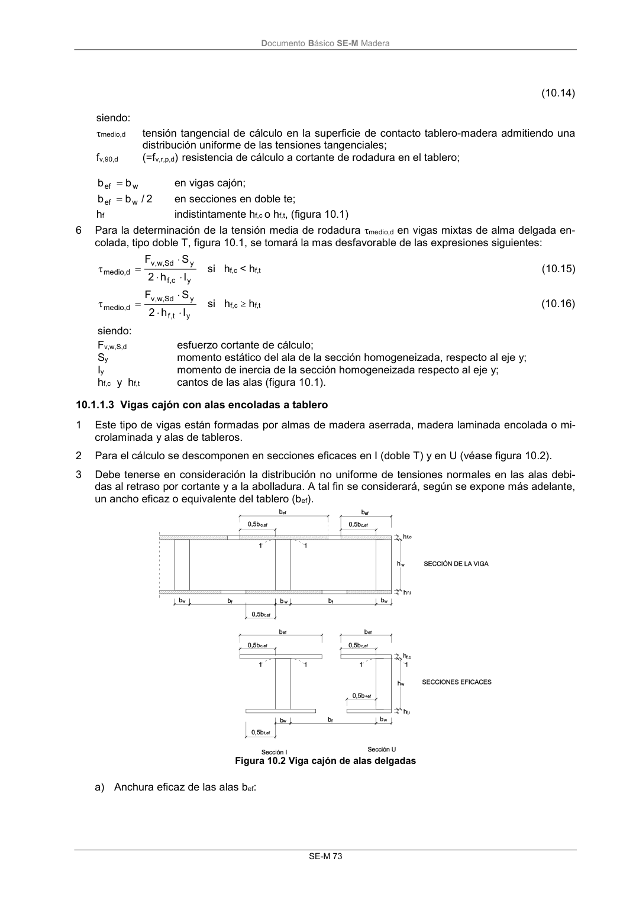

DB-SE-M Madera · edición 2019-12-20 · capa oficial
Documento DB-SE-M-oficial · SHA-256 del PDF 26b5819839ebfda78b0b119c5e76a0a37773b0d763c05688541870075df93718
Página física 79 de 132.
Copia fiel del PDF fuente · Fuente oficial
Ficha de la disposición en la fuente oficial
Formato: Texto de la página (Markdown)
Documento Básico SE-M Madera SE-M 73 (10.14) siendo: medio,d tensión tangencial de cálculo en la superficie de contacto tablero-madera admitiendo una distribución uniforme de las tensiones tangenciales; fv,90,d (=fv,r,p,d) resistencia de cálculo a cortante de rodadura en el tablero; w ef b b en vigas cajón; 2 / b b w ef en secciones en doble te; hf indistintamente hf,c o hf,t, (figura 10.1) 6 Para la determinación de la tensión media de rodadura medio,d en vigas mixtas de alma delgada en- colada, tipo doble T, figura 10.1, se tomará la mas desfavorable de las expresiones siguientes: y c,f y Sd , w , v d , medio I h 2 S F si hf,c < hf,t (10.15) y t,f y Sd , w , v d , medio I h 2 S F si hf,c hf,t (10.16) siendo: Fv,w,S,d esfuerzo cortante de cálculo; Sy momento estático del ala de la sección homogeneizada, respecto al eje y; Iy momento de inercia de la sección homogeneizada respecto al eje y; hf,c y hf,t cantos de las alas (figura 10.1). 10.1.1.3 Vigas cajón con alas encoladas a tablero 1 Este tipo de vigas están formadas por almas de madera aserrada, madera laminada encolada o mi- crolaminada y alas de tableros. 2 Para el cálculo se descomponen en secciones eficaces en I (doble T) y en U (véase figura 10.2). 3 Debe tenerse en consideración la distribución no uniforme de tensiones normales en las alas debi- das al retraso por cortante y a la abolladura. A tal fin se considerará, según se expone más adelante, un ancho eficaz o equivalente del tablero (bef). Figura 10.2 Viga cajón de alas delgadas a) Anchura eficaz de las alas bef:
